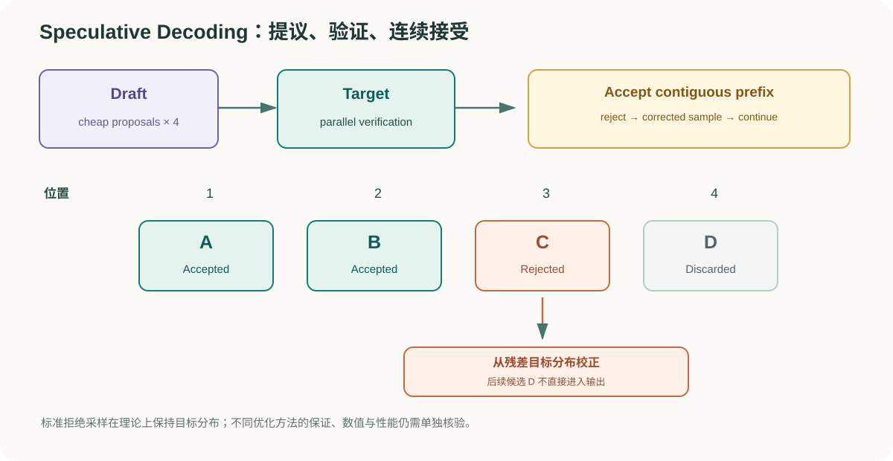

第 21 章 · 高级推理与源码实践
Speculative Decoding：用 Draft–Verify 减少串行步骤
从标准接受–拒绝采样的数学保证出发，理解 N-gram、EAGLE、MTP 等草稿策略与真实加速边界。
目标模型逐 token 生成时，很可能被一次次小 Decode step 的启动/内存访问限制。推测解码尝试让便宜过程先猜几个 token，再让大模型一次核验；成功与否取决于候选接受率、目标验证成本和实际批大小，而不取决于“猜得越长越好”。
学习目标
- 推导单个候选的接受概率和拒绝残差分布。
- 估算玩具接受率下的期望推进长度。
- 按部署版本配置 n-gram 方法并认识其他 speculator。
- 理解理论无损与实现/性能兼容边界。

21.1 为什么要同时使用草稿与目标模型？
普通自回归推理每次让目标模型执行一个 Decode step 来生成一个 token。对内存带宽敏感的低并发场景，目标模型一次前向的成本可能明显大于核验多个候选 token 的成本。推测解码（Speculative Decoding）让一个便宜的“草稿过程”先提出 K 个 token，然后让目标模型在一次验证步骤中并行计算这些位置的条件分布。
草稿来源可以是小模型、EAGLE、MTP、n-gram 前缀匹配或后缀查找。关键思想相同：草稿只提议，不直接决定最终输出。当多个连续草稿 token 可以被接受，就减少目标模型逐 token 前向次数；但它会增加草稿、验证、拒绝处理和内存消耗。
21.2 接受–拒绝：为什么理论上可以保持目标分布？
考虑一个提议 token x，草稿分布为 q(x)，目标分布为 p(x)。标准 speculative sampling 的单步接受概率为：
如果接受，就输出该草稿 token；如果拒绝，从校正后的残差分布 r(x) ∝ max(0, p(x) − q(x)) 中抽样。多 token 推测从左往右验证，只接受连续的前缀；在首次拒绝之后不能直接把后面预测的草稿 token 当作可用结果。
上面说明的是标准拒绝采样的数学保证，不是说任何“跳过验证/放宽接受”的方法都无损。官方文档特别指出：某些非标准优化（例如 FLy）会有意放宽验证，不应被描述为严格保持目标分布。此外，浮点数与 GPU kernel 差异可能产生有限的数值偏差。
常见误区：“验证 K 个 token 只需一次前向”不等于“成本等于普通一次 Decode”。Target 仍需处理更长的验证路径，注意力和 KV Cache 工作量增加；还要考虑草稿执行、mask、接受检测和输出拼接。
21.3 接受率、有效推进长度和加速
在简化的独立、同分布玩具假设下，每一个草稿位置条件接受率均为 a。如果一次草稿长度为 K，期望被接受的草稿数为：
标准算法在一轮核验中通常还会输出一个校正/奖励 token，因此总推进量的玩具估计是 E[L] = 1 + E[A]（最多 K+1）。这个公式要求将各位置的条件接受率近似为相同且独立，且不计停止条件；真实接受事件相关，分布会随上下文变化。
若目标原本每 token 耗时为 T_target，一次草稿+验证耗时为 T_draft(K)+T_verify(K)+T_overhead，则玩具加速上限约为：
如果验证很慢、batch 很大或草稿接受率低，加速可以小于 1，即比不用推测解码更慢。真实基准需要报告 TPOT/ITL、TTFT、请求吞吐、目标模型前向次数和 acceptance length，而不是只报告一个“命中率”。
21.4 vLLM 2026 的策略矩阵与配置
当前官方 SpeculativeConfig 文档列出的常见 method 包括 draft_model、ngram、suffix、mtp、eagle3、dflash 等。它们并非简单替代关系：N-gram/后缀规则通常不需另一个草稿神经网络；EAGLE/MTP 依赖特定 checkpoint 或模型结构。每种方法都有独立的硬件、模型与功能兼容约束。
# 当前 vLLM 示例：使用 n-gram 作为草稿来源
vllm serve <verified-target-model> --speculative-config '{"method":"ngram","num_speculative_tokens":4,"prompt_lookup_min":1,"prompt_lookup_max":3}'
# Python 离线：保持所用版本的模型与参数兼容
from vllm import LLM
llm = LLM(
model="<verified-target-model>",
speculative_config={
"method": "ngram",
"num_speculative_tokens": 4,
"prompt_lookup_min": 1,
"prompt_lookup_max": 3,
},
)配置 JSON 中不应擅自嵌入 tensor_parallel_size；TP/PP 参数属于外层 EngineArgs。EAGLE-3、MTP 的草稿模型与目标模型通常需要匹配，不能任意交换 checkpoint；应以官方示例、所部署版本的参数 Schema 和实际模型支持矩阵为准。
21.5 交互实验：接受率为何影响速度？
调整每个草稿位置的玩具接受概率与 K。结果只展示独立概率假设的期望接受草稿 token 数和期望推进 token 数；不调用实际模型，不承诺速度收益。
无需网络即可运行此玩具实验。
21.6 什么时候不要启用？
- 高并发场景验证成本/Batch 扩张大，可能使 TPOT 变差。
- 草稿与目标预测明显不一致，连续接受前缀很短。
- 目标模型没有合适的 EAGLE/MTP speculator，加载额外草稿权重造成显存压力。
- 某些 PP、量化、多模态、结构化输出或硬件组合存在版本兼容限制。
实践采用 A/B 测量：固定模型、GPU、并发、输入输出分布，比较普通解码和不同 K/方法；记录 spec_decode acceptance metrics 和延迟。对特殊采样配置应验证目标分布与业务质量是否保持。
本章自检
- 为什么草稿模型只能提出候选，最终 token 分布必须由目标模型控制？
- 为什么接受率高不一定意味着 TPOT 更低？
- 对独立同分布的玩具接受概率 a，如何估算长度为 K 的草稿接受数？
- 当前 vLLM SpeculativeConfig 该如何指定 n-gram 与 EAGLE？
参考资料与源码入口
- Speculative Decoding：配置 Schema、策略选择与分布保持约束
- N-gram Speculation：n-gram 参数与示例
- Acceptance Metrics：每请求 acceptance 度量
- SpeculativeConfig：当前配置字段与方法兼容限制
- Speculative Sampling Paper：接受概率与残差校正采样的原始算法
审校基线：vLLM e72fc9ae50c221180c4b8f4a94c5009714a4b199（2026-11-22）；nano-vLLM bb823b3e06983d71485a8e1f23715ebd87d98ef8（2026-04-26）。任何配置建议必须与目标版本、目标模型及硬件实测相互核验。